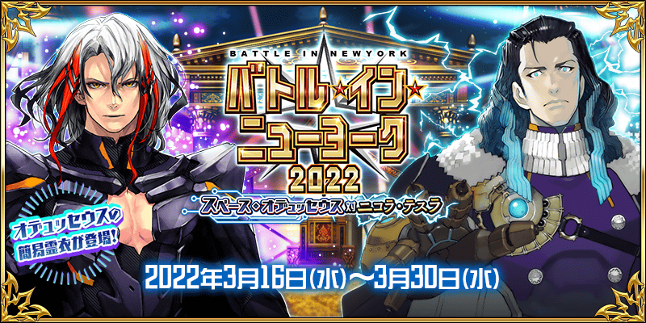


舉辦期間限定活動「BATTLE IN NEWYORK 2022 ～宇宙・奧德修斯對尼古拉・特斯拉～」！
摻雜蒼輝銀河・從者軍團與迦勒底從者的銀河規模武鬥大會白熱化！
打敗一騎當千的猛者們，贏取銀河“最強”之座與豪華報酬吧！
本活動中，在挑戰與從者戰鬥的大會關卡後，能獲得活動道具。
收集活動道具的話，除了可交換各種報酬外，也可挑戰抽選來贏得各種的比賽獎品。
由於抽選次數沒有能進行無數次，於各關卡收集活動道具來入手各種比賽獎品吧！
另外，通過挑戰無法接關的超高難易度戰鬥的展演關卡的話，可獲得更加豪華的報酬！
※本活動中不會登場新的展演關卡，預定復刻過去活動的展演關卡後再登場。
※本頁面皆為開發中圖片。會有與實際圖片相異的情況。 ※一部份的關卡為日後開放。
◆活動舉辦期間◆
2022年3月16日(三) 17:00～3月30日(三) 11:59
◆活動參加條件◆
滿足以下條件的御主才能參加
・通過第2部 第1章「Lostbelt No.1 永久凍土帝國 安娜塔西亞 獸國的皇女」
※不需要通過亞種特異點(從Ⅰ到Ⅳ)。
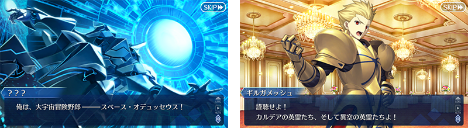
期間限定活動「BATTLE IN NEWYORK 2022 ～宇宙・奧德修斯對尼古拉・特斯拉～」中，會出現定期變換關卡內容的大會關卡、逐日開放的展演關卡、從者總動員挑戰的特斯拉盃3種活動關卡。
大會關卡中能獲得各種活動道具，展演關卡與特斯拉盃中則能獲得豪華的通過報酬。
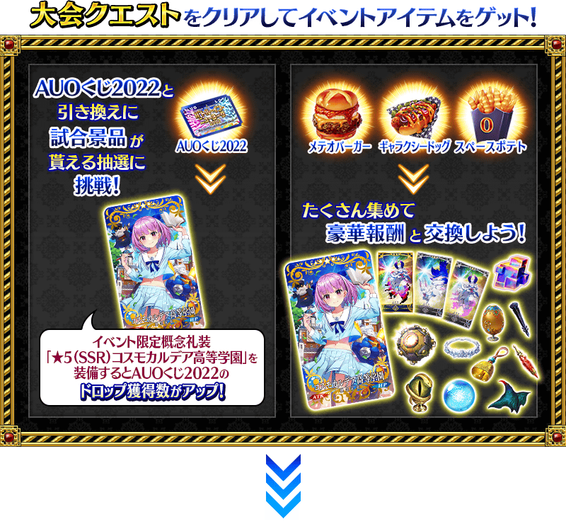 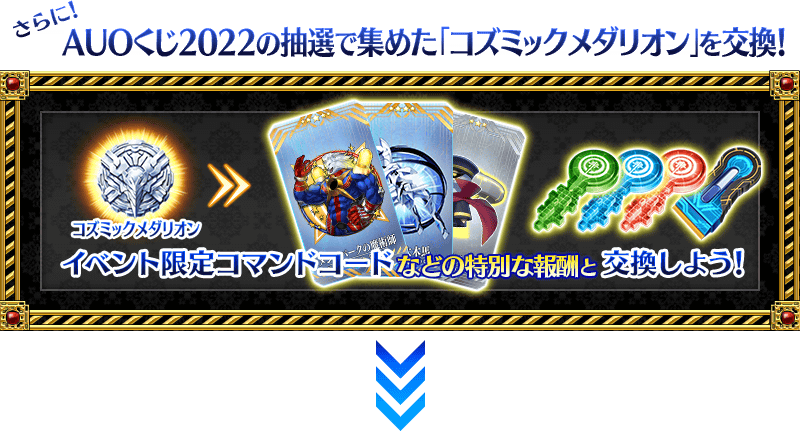 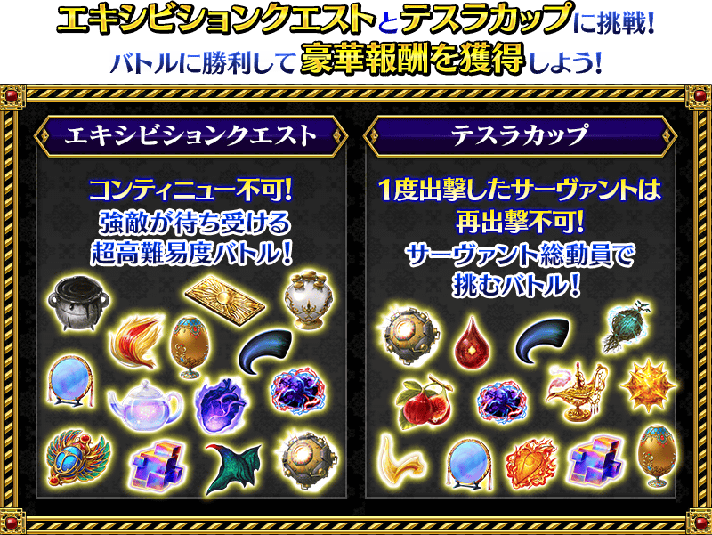

活動期間中，會出現與複數從者對戰的大會關卡。
大會關卡有5階段的難易度，各自對戰的從者和報酬等有所變化。
另外，透過行程表的進行，關卡的種類會從「第一聯盟」變化，因此關卡內容也會變化。
請注意每個關卡有各自的舉辦期間，超過後就算是活動舉辦中也無法挑戰。
◆大會關卡舉辦期間◆
| 關卡的種類 | 舉辦期間 |
|---|---|
| 第一聯盟 | 2022年3月16日(三) 17:00～3月20日(日) 16:59 |
| 第二聯盟 | 2022年3月20日(日) 17:00～3月25日(五) 16:59 |
| 第三聯盟 | 2022年3月25日(五) 17:00～3月30日(三) 11:59 |
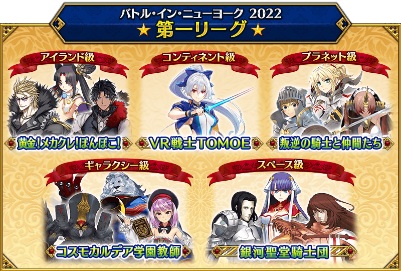
| 關卡 | 推薦Lv. | 消耗AP |
|---|---|---|
| 第一聯盟 アイランド級 黄金！メカクレ！ぽんぽこ！ | 70 | 40 |
| 第一聯盟 コンティネント級 ＶＲ戦士ＴＯＭＯＥ | 75 | |
| 第一聯盟 プラネット級 叛逆の騎士と仲間たち | 80 | |
| 第一聯盟 ギャラクシー級 コスモ迦勒底学園教師 | 90 | |
| 第一聯盟 スペース級 銀河聖堂騎士団 | 90＋ |
【3月20日(日) 17:00追記】
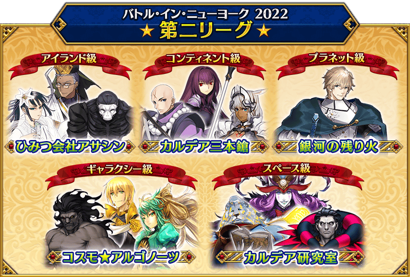
| 關卡 | 推薦Lv. | 消耗AP |
|---|---|---|
| 第二聯盟 アイランド級 ひみつ会社アサシン | 70 | 40 |
| 第二聯盟 コンティネント級 カルデア三本鎗 | 75 | |
| 第二聯盟 プラネット級 銀河の残り火 | 80 | |
| 第二聯盟 ギャラクシー級 コスモ★アルゴノーツ | 90 | |
| 第二聯盟 スペース級 カルデア研究室 | 90＋ |
以附加無法接關限制挑戰的超高難易度關卡會有使用特殊技能等與平常不同攻擊方式的敵人。
通過關卡的話可得到呼符等的豪華報酬。
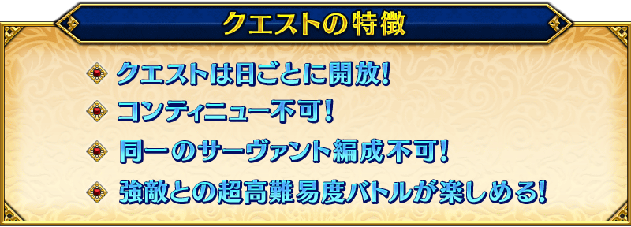
※就算是同名的從者只要稀有度或職階相異的情況和在名稱附有〔Alter〕等的情況即可編成。 ※展演關卡就算在通過後也不會消失，能無數次挑戰。 ※關卡通過報酬、戰利品、御主EXP、魔術禮裝EXP、絆點數只可在初次通過時獲得。
【BATTLE IN NEWYORK 2018 復刻展演關卡】
| 關卡 | 舉辦期間 |
|---|---|
| 【超高難易度】復刻: 飯糰連鎖店・一號 | 2022年3月16日(三) 17:00～ 3月30日(三) 11:59 |
| 【超高難易度】復刻: 火焰之門 | 2022年3月16日(三) 17:00～ 3月30日(三) 11:59 |
| 【超高難易度】復刻: 摩天樓的怪人 | 2022年3月17日(四) 17:00～ 3月30日(三) 11:59 |
| 【超高難易度】復刻: 歡迎來到豹之國 | 2022年3月17日(四) 17:00～ 3月30日(三) 11:59 |
| 【超高難易度】復刻: 美分租借商店 | 2022年3月18日(五) 17:00～ 3月30日(三) 11:59 |
| 【超高難易度】復刻: 甜品宇宙 | 2022年3月18日(五) 17:00～ 3月30日(三) 11:59 |
| 【超高難易度】復刻: 終章「金色大都會」 | 2022年3月19日(六) 17:00～ 3月30日(三) 11:59 |
| 【超絶難易度】復刻: 終章「金色大都會」 Returns | 2022年3月19日(六) 17:00～ 3月30日(三) 11:59 |
※『【超絶難易度】復刻: 終章「金色大都會」 Returns』並非全新關卡，是調整在2018年舉辦的「BATTLE IN NEWYORK 2018」展演關卡『【超高難易度】終章「金色大都會」』的ATK/HP讓難易度更高的挑戰要素。
【BATTLE IN NEWYORK 2019 復刻展演關卡】
| 關卡 | 舉辦期間 |
|---|---|
| 【超高難易度】復刻: 正賽決賽 | 2022年3月20日(日) 17:00～ 3月30日(三) 11:59 |
| 【超高難易度】復刻: 夫人是魔女(咒) | 2022年3月20日(日) 17:00～ 3月30日(三) 11:59 |
| 【超高難易度】復刻: 美麗的戈爾貢三姐妹 | 2022年3月21日(一) 17:00～ 3月30日(三) 11:59 |
| 【超高難易度】復刻: 抓住小丑！ | 2022年3月21日(一) 17:00～ 3月30日(三) 11:59 |
| 【超高難易度】復刻: 緋紅的勇者傳說 HD重製版 | 2022年3月22日(二) 17:00～ 3月30日(三) 11:59 |
| 【超高難易度】復刻: 翠之彗星 | 2022年3月22日(二) 17:00～ 3月30日(三) 11:59 |
| 【超高難易度】復刻: 終章 永遠之都 | 2022年3月23日(三) 17:00～ 3月30日(三) 11:59 |
| 【超絕難易度】復刻: 終章 永遠之都 Triumphus | 2022年3月23日(三) 17:00～ 3月30日(三) 11:59 |
※「【超絕難易度】復刻: 終章 永遠之都 Triumphus」並非全新關卡，是調整在2019年舉辦的「BATTLE IN NEWYORK 2019」展演關卡「【超高難易度】終章 永遠之都」的ATK/HP讓難易度更高的挑戰要素。
集合過去登場的7個挑戰關卡在特斯拉盃靠從者總動員挑戰。
挑戰特斯拉盃有通過關卡一次的從者，無法在同個特斯拉盃內的其他關卡出擊的限制。
另外，特斯拉盃中，從最初就可確認「關卡情報」中出現的敵人情報外，在挑戰關卡時會顯示「攻略要點」。
由於通過各關卡的話可獲得豪華的報酬，參考敵人情報和「攻略要點」有效分配持有從者，以通過所有關卡為目標吧！
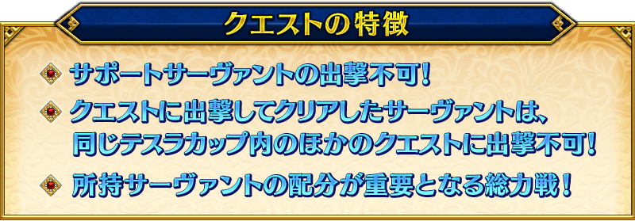
※在特斯拉盃有「特斯拉盃 百萬線圈級」與「特斯拉盃 十億線圈級」，「特斯拉盃 十億線圈級」預定日後開放。 ※同個從者可各自在「特斯拉盃 百萬線圈級」與「特斯拉盃 十億線圈級」出擊。 ※在關卡出擊的從者，只限通過關卡時變得無法在同個特斯拉盃內的其他關卡出擊，敗北或撤退的情況可出擊。 ※持有多位同個從者的情況，在通過關卡時無法出擊的同從者也變得無法在同個特斯拉盃內的其他關卡出擊。 ※關卡通過報酬、戰利品、御主EXP、魔術禮裝EXP、絆點數只可在初次通過時獲得。 ※請注意各關卡的通過報酬會有與過去登場時不同的情況。
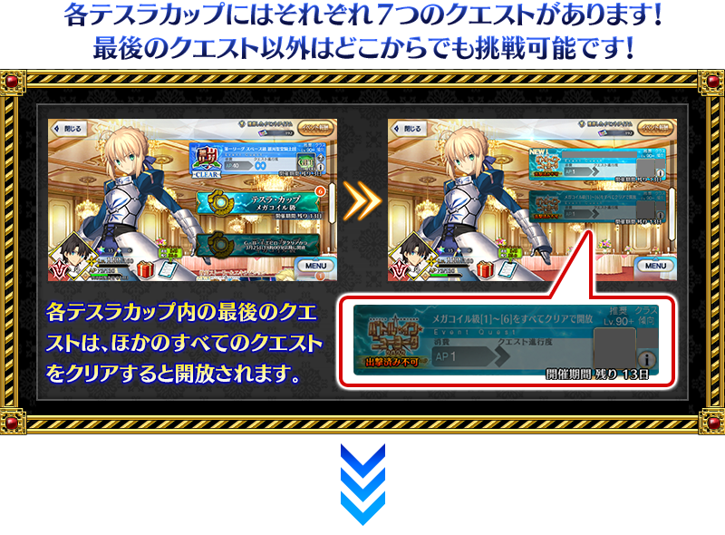 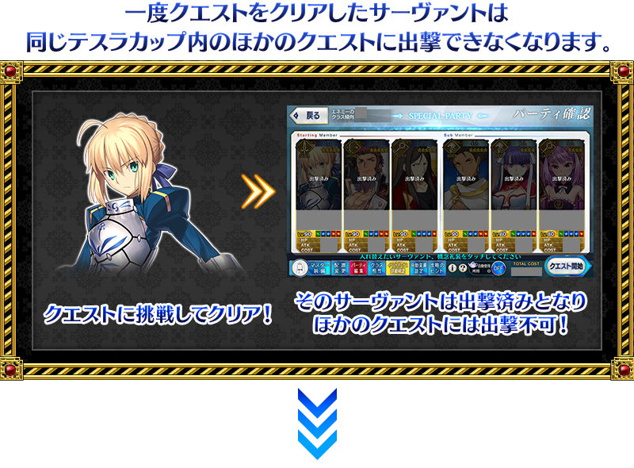 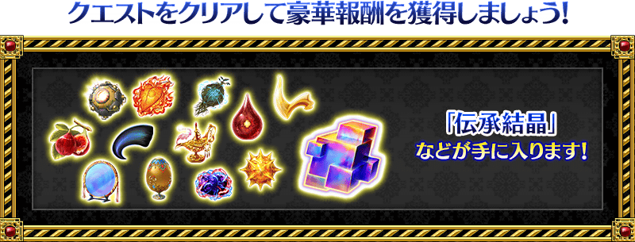
關於特斯拉盃的關卡
特斯拉盃中，重置通過狀況的話，可將通過一次的關卡重新來過。
另外，通過該關卡後變成已出擊的從者會變得能再次出擊。
嘗試各種編成，想讓已出擊的從者在別的關卡出擊請活用通過狀況的重置。
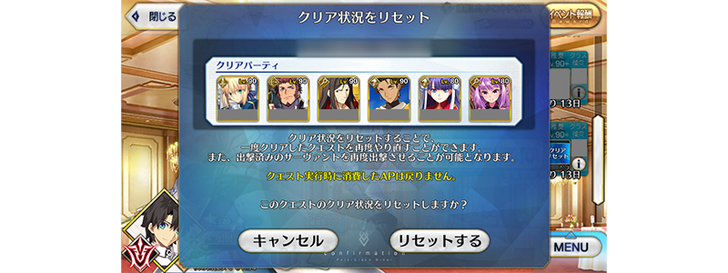
※請注意不會返還在關卡施行時消耗的AP。 ※請注意就算重置通過狀況，也無法再次獲得關卡通過報酬、戰利品、御主EXP、魔術禮裝EXP、絆點數。 ※請注意有開放特斯拉盃內最後關卡的狀態下重置其他關卡通過狀況的話，必須再次通過關卡滿足開放條件才能挑戰最後的關卡。
在活動關卡收集「AUO抽獎券2022」，交換比賽獎品吧！
會透過抽選進行比賽獎品的交換。
獎品陣容會各放入1個「大獎」。
抽到大獎，點擊「比賽獎品更新」的話，會補充新的大獎，切換到下個陣容。
另外，抽到所有比賽獎品後，會自動補充新的比賽獎品，切換到下個陣容。
放入「大獎」的陣容有10次份！
獲得「大獎」，注目的禮物都沒了的話，就點擊「比賽獎品更新」來補充「大獎」吧！
※比賽獎品抽選的第1次～第10次，抽到「大獎」會顯示「比賽獎品更新」。 ※第11次以後，不會顯示「比賽獎品更新」，而是在所有比賽獎品都沒了時自動切換到下個陣容。 ※第11次以後，不會更新「大獎」及「黃金果實」「白銀果實。 ※收集在比賽獎品陣容中有的活動道具「浩瀚獎章」可交換活動限定指令紋章等特別的報酬。 ※交換期間結束後「AUO抽獎券2022」會消失。
◆AUO抽獎券2022交換期間◆
2022年3月16日(三) 17:00～4月6日(三) 11:59
第11次以後1次最多能交換100個
放入「大獎」的第10次以前陣容的比賽獎品交換完後，從第11次以後的陣容，1次最多可交換100個比賽獎品。
※「AUO抽獎券2022」沒到可交換100個的情況。屆時可給予最大數為止的比賽獎品。
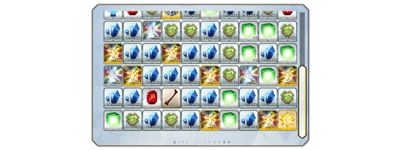
◆比賽獎品陣容◆
【大獎】
| 陣容次數 | 大獎 | ||
|---|---|---|---|
| 第1～5次 | 活動限定概念禮裝★5(SSR)「チェック・レディ」 | ||
| 第6次 |

|
傳承結晶 | |
| 第7～10次 |

|
英靈結晶・流星之芙芙ALL★4(HP) | |
【比賽獎品】
| 種類 | 比賽獎品 | ||
|---|---|---|---|
| 活動道具 | 浩瀚獎章 | ||
| 技能強化＆靈基再臨素材 |
禍罪之箭頭 鬼魂提燈 振盪火藥 英雄之證 凶骨 |
||
| 技能強化素材 |
剣之秘石 弓之秘石 槍之秘石 騎之秘石 術之秘石 殺之秘石 狂之秘石 剣之魔石 弓之魔石 槍之魔石 騎之魔石 術之魔石 殺之魔石 狂之魔石 剣之輝石 弓之輝石 槍之輝石 騎之輝石 術之輝石 殺之輝石 狂之輝石 |
||
| 其他道具 |
睿智的猛火ALL★4(SR) 睿智的大火ALL★3(R) 黃金果實 ※第10次為止 白銀果實 ※第10次為止 赤銅果實 魔力稜鏡 QP 友情點數 |
||
超值攻略方法・其1
裝備活動限定概念禮裝與期間限定概念禮裝的話，在活動中會受到各式各樣的恩惠。
裝備可靠比賽獎品抽選入手的活動限定概念禮裝「★5(SSR)チェック・レディ」的話，在期間限定活動「BATTLE IN NEWYORK 2022 ～宇宙・奧德修斯對尼古拉・特斯拉～」中自身的攻擊威力會提升。
另外，活動道具交換で入手できる活動限定概念禮裝「★5(SSR)コスモカルデア高等学園」装備することで活動道具「AUO抽獎券2022」的掉落獲得數提升！
另外，裝備在聖晶石召喚Pick Up的期間限定概念禮裝「★5(SSR)ギャラクシー・ケラウノス」「★4(SR)ドック・キュケオン」「★3(R)ひみつ会社 アサシン」的話，活動道具「流星漢堡」「銀河熱狗」「宇宙薯條」各自的掉落獲得數會提升。
※請注意各關卡的道具掉落率並非100％。
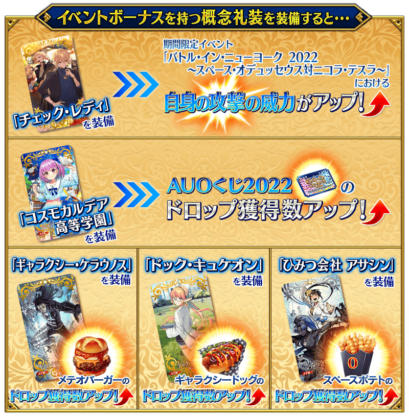
|
★★★★★SSR |
|
★★★★★SSR |
|
【活動限定】 |
| 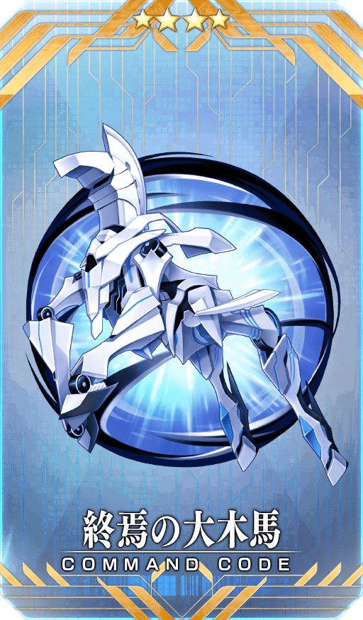 |
★★★★SR |
|
★★★R |
活動道具可自點擊管理室(ターミナル)畫面右上「活動報酬」鍵所顯示的「活動道具交換」畫面，交換以下的道具。
※關於傳承結晶、英靈結晶・日輪之芙芙ALL★4(ATK)的交換，進行在3月25日(五)開放的活動關卡後才能交換。 ※活動道具交換期間結束後「浩瀚獎章」「流星漢堡」「銀河熱狗」「宇宙薯條」會消失。
◆交換期間◆
2022年3月16日(三) 17:00～4月6日(三) 11:59
◆能用浩瀚獎章交換的道具◆
|
【活動報酬指令紋章】 【技能強化＆靈基再臨素材】 【其他道具】 |
◆能用流星漢堡交換的道具◆
|
【靈衣開放權】 【活動限定概念禮裝】 【技能強化＆靈基再臨素材】 【靈基再臨素材】 【其他道具】 |
◆能用銀河熱狗交換的道具◆
|
【靈衣開放權】 【活動限定概念禮裝】 【技能強化＆靈基再臨素材】 【靈基再臨素材】 【其他道具】 |
◆宇宙薯條能用交換的道具◆
|
【活動限定概念禮裝】 【技能強化＆靈基再臨素材】 【其他道具】 |
「★5(SSR)奧德修斯」的簡易靈衣「Aigis(第二再臨)」與「Aigis(第三再臨)」開放權做為期間限定活動「BATTLE IN NEWYORK 2022 ～宇宙・奧德修斯對尼古拉・特斯拉～」的報酬登場！
本活動中，可靠活動道具交換入手上述靈衣開放權。
另外，想開放靈衣的話，除了靈衣開放權外再加上必須滿足一些開放條件。
◆有關靈衣開放權的注意◆
※「★5(SSR)奧德修斯」的靈衣開放權只限期間限定活動「BATTLE IN NEWYORK 2022 ～宇宙・奧德修斯對尼古拉・特斯拉～」的活動道具交換期間才能入手。
※「★5(SSR)奧德修斯」的靈衣是只有變化外觀，語音沒有變化的「簡易靈衣」。
※請注意未持有「★5(SSR)奧德修斯」的情況，可入手靈衣開放權。但無法進行靈衣開放。
※「★5(SSR)奧德修斯」開放簡易靈衣「Aigis(第二再臨)」的話，靈基再臨第2階段的卡面與圖示會變成露臉的狀態。變化前的卡面與圖示會變成簡易靈衣「Aigis(第二再臨)」。
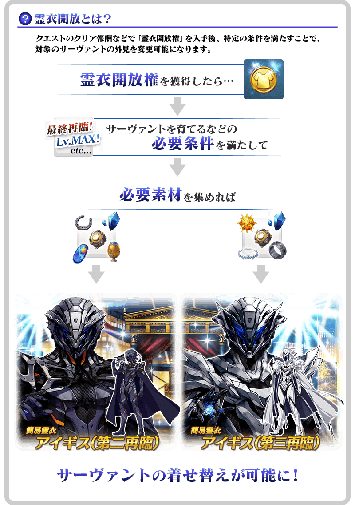

「靈衣開放」是自強化畫面進行。
※「靈衣開放」後會自動切換戰鬥角色和圖示。若想回到「靈衣開放」前的狀態和變成其他再臨階段的情況，可自從者詳細畫面變更。 ※進行「靈衣開放」不會讓職階和能力等有所變化。
介紹奧德修斯簡易靈衣開放後的寶具演出！
介紹各自開放簡易靈衣「Aigis(第二再臨)」「Aigis(第三再臨)」「★5(SSR)奧德修斯」寶具演出！
在2020年舉辦的期間限定「Fate/Grand Order ～5th Anniversary～」中登場的「★4(SR)尼祿・克勞狄烏斯(Saber)」靈衣「維納斯的絲綢」開放權獲得關卡在達文西工房的「靈衣縫製」追加！
用稀有稜鏡5個交換後，可入手上述靈衣開放權。
並且，有通過主線關卡第1部 第二特異點的情況可免費交換靈衣「維納斯的絲綢」開放權獲得關卡！
另外，想靈衣開放的話，除了靈衣開放權外再加上必須滿足一些開放條件。
＞＞關於靈衣開放的說明在此
◆追加時間◆
2022年3月16日(三) 17:00～
◆交換條件◆
滿足以下條件的御主才能交換
・通過「特異點F 炎上汙染都市 冬木」
・未通過「尼祿靈衣獲得關卡」
※追加到「靈衣縫製」的靈衣「維納斯的絲綢」開放權獲得關卡為永久，沒有交換期限。 ※關於已經取得交換對象靈衣開放權的玩家，無法交換。 ※在用稀有稜鏡5個交換靈衣「維納斯的絲綢」開放權獲得關卡後達成免費化條件的情況，會返還交換使用的稀有稜鏡5個到禮物箱。
◆靈衣開放權獲得關卡交換免費化的條件◆
滿足以下條件的御主才能免費交換
・通過主線關卡第1部 「第二特異點 永續狂氣帝國 羅馬七省」
◆有關靈衣開放權的注意◆
※「★4(SR)尼祿・克勞狄烏斯(Saber)」的靈衣會隨著外觀變化一部份語音。
※請注意未持有「★4(SR)尼祿・克勞狄烏斯(Saber)」的情況，可入手靈衣開放權。但無法進行靈衣開放。
◆追加道具(永久)◆
| 追加道具 | 能交換次數 | 1次交換所需的 稀有稜鏡數 |
|---|---|---|
| 靈衣「維納斯的絲綢」開放權獲得關卡 | 1次 |
5個 有通過主線關卡第1部 第二特異點的情況就能免費交換！ |
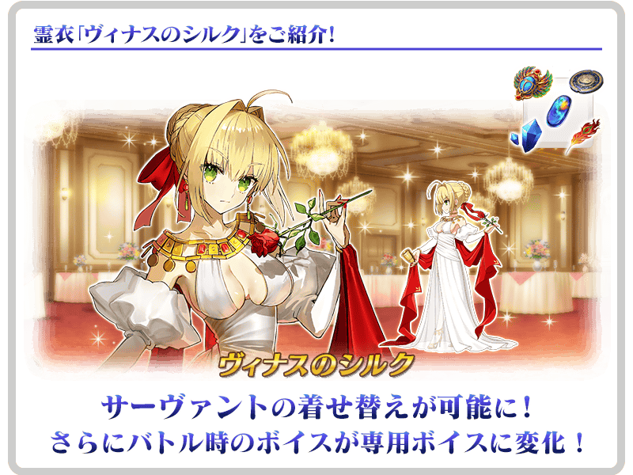
介紹尼祿・克勞狄烏斯(Saber)靈衣開放後的寶具演出！
介紹開放靈衣「維納斯的絲綢」的「★4(SR)尼祿・克勞狄烏斯(Saber)」寶具演出！
【3月23日(三) 17:00追記】
在2018年舉辦的期間限定活動「從者・夏日・慶典！」中登場的「★4(SR)吉爾伽美什(Caster)」靈衣「支配階級」開放權在達文西工房的「靈衣縫製」追加！
用稀有稜鏡5個交換後，可入手上述靈衣開放權。
並且，有通過主線關卡第1部 第七特異點的情況可免費交換靈衣「支配階級」開放權！
另外，想靈衣開放的話，除了靈衣開放權外再加上必須滿足一些開放條件。
＞＞關於靈衣開放的說明在此
◆追加時間◆
2022年3月23日(三) 17:00～
◆交換條件◆
滿足以下條件的御主才能交換
・通過「特異點F 炎上汙染都市 冬木」
・未入手靈衣「支配階級」開放權
※追加到「靈衣縫製」的靈衣「支配階級」開放權為永久，沒有交換期限。 ※關於已經取得交換對象靈衣開放權的玩家，無法交換。 ※在用稀有稜鏡5個交換靈衣「支配階級」開放權後達成免費化條件的情況，會返還交換使用的稀有稜鏡5個到禮物箱。
◆靈衣開放權交換免費化的條件◆
滿足以下條件的御主才能免費交換
・通過主線關卡第1部 「第七特異點 絕對魔獸戰線 巴比倫尼亞」
◆有關靈衣開放權的注意◆
※「★4(SR)吉爾伽美什(Caster)」的靈衣會隨著外觀變化一部份份語音。
※請注意未持有「★4(SR)吉爾伽美什(Caster)」的情況，可入手靈衣開放權。但無法進行靈衣開放。
◆追加道具(永久)◆
| 追加道具 | 能交換次數 | 1次交換所需的 稀有稜鏡數 |
|---|---|---|
| 靈衣「支配階級」開放權 | 1次 |
5個 有通過主線關卡第1部 第七特異點的情況就能免費交換！ |
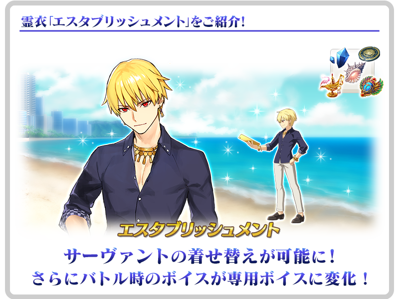
介紹吉爾伽美什(Caster)靈衣開放後的寶具演出！
介紹開放靈衣「支配階級」的「★4(SR)吉爾伽美什(Caster)」寶具演出！
可在達文西工房的「靈衣縫製」交換的「★4(SR)尼祿・克勞狄烏斯(Saber)」靈衣「奧林匹亞體操服」開放權，通過主線關卡第1部 第二特異點後變得可免費交換！
◆靈衣開放權交換免費化的時間◆
2022年3月16日(三) 17:00～
※靈衣「奧林匹亞體操服」開放權的交換免費化沒有期限。
◆靈衣開放權交換免費化的條件◆
滿足以下條件的御主才能免費交換
・通過主線關卡第1部 「第二特異點 永續狂氣帝國 羅馬七省」
※關於已經取得交換對象靈衣開放權的玩家，無法交換。 ※在用稀有稜鏡5個交換過靈衣「奧林匹亞體操服」，已經達成靈衣開放權交換免費化條件的情況，會返還交換使用的稀有稜鏡5個到禮物箱。 ※在用稀有稜鏡5個交換靈衣「奧林匹亞體操服」後達成靈衣開放權交換免費化條件的情況，也會返還交換使用的稀有稜鏡5個到禮物箱。
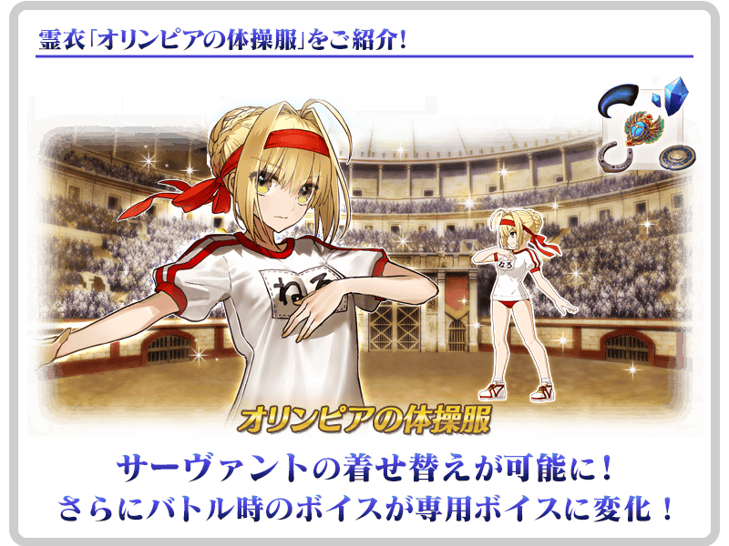
介紹尼祿・克勞狄烏斯(Saber)靈衣開放後的寶具演出！
介紹開放靈衣「奧林匹亞體操服」的「★4(SR)尼祿・克勞狄烏斯(Saber)」寶具演出！
強化「★5(SSR)尼古拉・特斯拉」「★4(SR)湯瑪斯・愛迪生」的特別關卡「從者強化關卡」，在迦勒底之門永久追加。
不僅進行對象從者的強化，也可獲得聖晶石做為關卡通過報酬。
※請注意在從者強化關卡沒有文字冒險部份。
◆追加時間◆
2022年3月16日(三) 17:00～
◆開放條件◆
持有的強化對象從者，必須使其最終再臨。
另外，「★5(SSR)尼古拉・特斯拉」的情況，必須通過「★5(SSR)尼古拉・特斯拉」的幕間物語 第2節。
※未持有對象從者的話，不會出現關卡。
※關卡沒有舉辦期限。
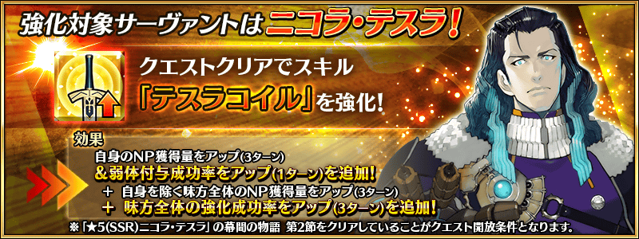
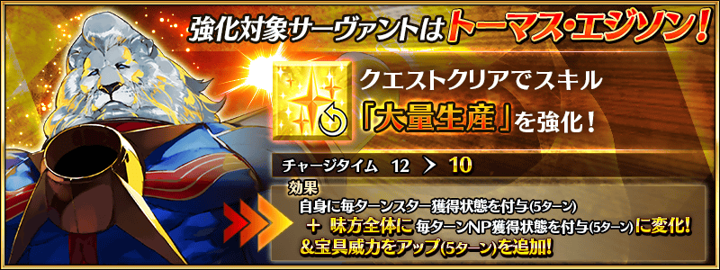
「★5(SSR)尼古拉・特斯拉」的戰鬥動作及寶具演出翻新！
◆翻新實施時間◆
2022年3月16日(三) 17:00～
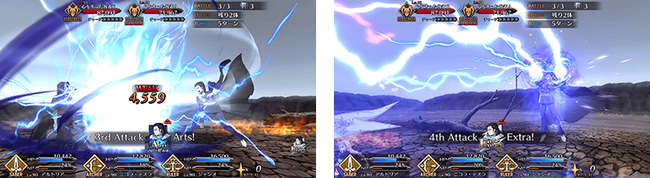
【3月23日(三) 17:00追記】
其他還有，
・BATTLE IN NEWYORK 2022Pick Up召喚
・BATTLE IN NEWYORK 2022 吉爾伽美什(Archer)Pick Up召喚
以期間限定舉辦中！
關於詳情，請自下述橫幅確認。
■「BATTLE IN NEWYORK 2022Pick Up召喚」詳細情報